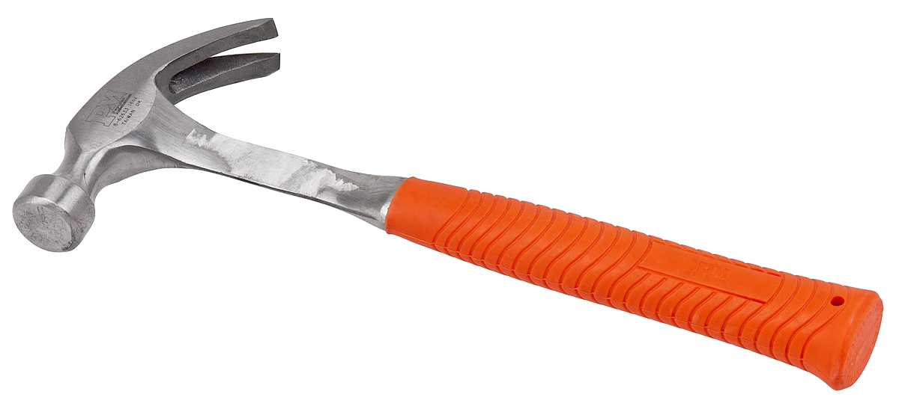
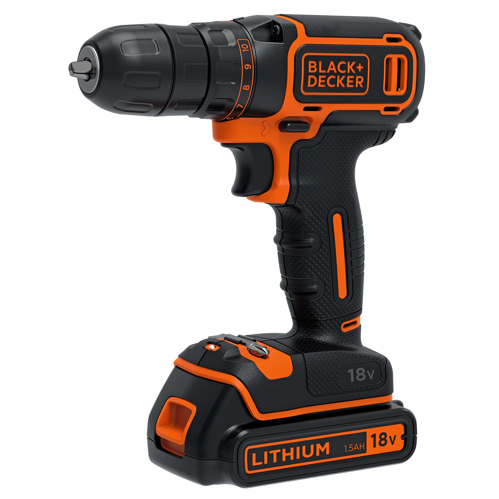
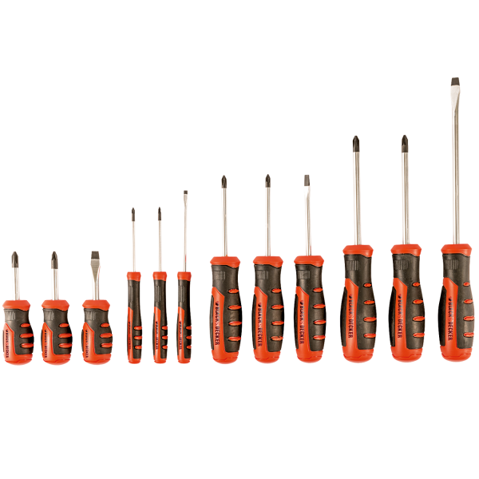

Kalapács

Kalapácsra van szükség egy szög beveréséhez, kalapács kell a fém megmunkálásához
Napjainkban a hagyományos fanyelű kalapácsok mellett, már az ergonómiai igényeknek megfelelően kialakított üvegszálas nyéllel ellátott típusok is elérhetőek. Emellett a szakemberek munkáját könnyíti meg a mágneses fejjel ellátott kalapács is.

Fúró
A kézi elektromos fúrógépek maximum 10–13 mm átmérőjű furatok készítéséhez alkalmasak. Általában 450 W körüli motorral hajtják meg. A hobbi kategóriába tartozó fúrógépeket gyakran ütvefúró funkcióval is ellátják, ami alkalmassá teszi tégla- és betonfal fúrására.
Csavarhúzó

Sok fajta csavar létezik,ehhez sok féle csavarhúzó fej is létezik.A csavarfej biztosítja a csavar tengelyirányú forgatását az össze- és a szétszereléshez.